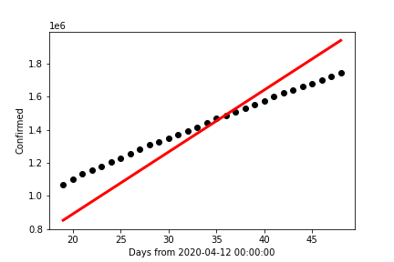
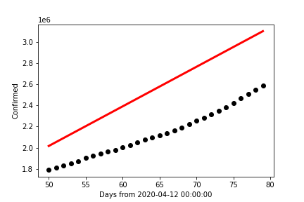
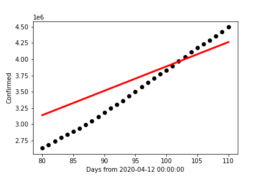

Why (Not) Linear Regression Modeling
Given that there are periods of increasing and decreasing numbers of cases, it can be tempting
to calculate prior slopes and use them to predict short-term future case counts. One simple solution
would be to grab an earlier period of recorded case counts, calculate the average change in the number
of cases over time and use the calculations to predict cases when an apparent surge is on the rise.
This is linear regression modeling, and thanks to machine learning libraries such as sklearn, it is easy
to find the most accurate estimated linear relationship between the number of days that have passed and
the number of cases that have been recorded. A short-sighted individual will assume that finding the most
accurate linear relationship will now be so easy to find that it will be most effective in predicting future
case numbers as an outbreak appears to start.
However, as the charts on the right demonstrate, this is not a reliable means of prediction!

This chart contains the data collected for the month of May, 2020, in black dots. The red line
was created using the sklearn library's linear regression functions and the data for that time period.
It is also worthy note that the data and prediction line appear to intersect only once before skewing
away from each other between the 34 and 36-day mark. In adddition, the resulting R²-value within
this data set is ~0.5772; meaning the line of best fit for this time interval has over 57% chance of
varying from the actual result. It is worth repeating that this is the best line of fit we are starting with,
and already it has proved to be unreliable for the data it is meant to fit!

This next chart contains the same red line formed from the month of May, only this time the data points
plotted in black are for the month of June, 2020. The R²-value is now ~(-0.8031); indicating a change
in difference of over 1.3 from the prior data set's R²-value. The fact it is negative indicates that the difference
in the predicted and actual data is so large that the mean of the predicted values has a stronger likelihood of predicting
the case count than our line of best fit from May!

The final chart (directly above) was formed with the same line, but for the month of July, 2020. It is in
this chart that we find a surprising change in predictability. The R²-value for this data set is ~0.2418;
the lowest of all three charts. While on the surface this appears to be a very good means of predicting July 2020 COVID-19
case counts, this only works if we do not take the other two months into consideration.